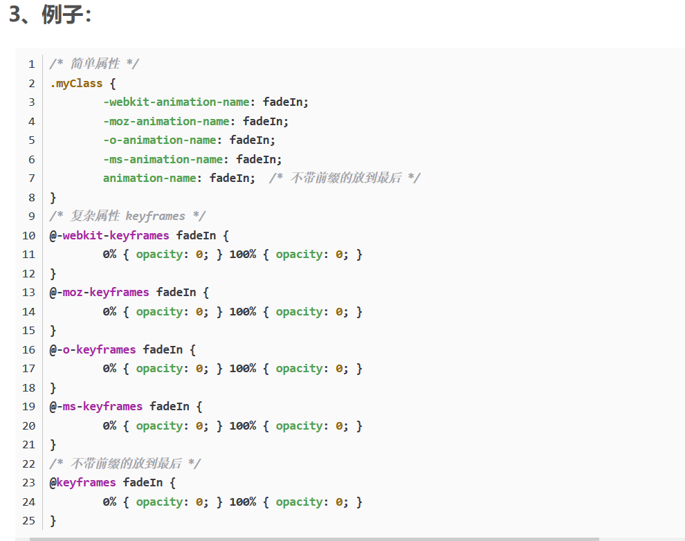

CSS浏览器前缀兼容写法
-
浏览器引擎前缀(Vendor Prefix)有哪些？
1,-moz- /* 火狐等使用Mozilla浏览器引擎的浏览器 */
2,-webkit- /* Safari, 谷歌浏览器等使用Webkit引擎的浏览器 */
3,-o- /* Opera浏览器(早期) */
4,-ms- /* Internet Explorer (不一定) */
浏览器 内核 前缀
1,IE trident -ms-
2,Firefox gecko -moz-
3,Google webkit/blink -webkit-
4,Safari webkit -webkit-
5,Opera presto -o-
-
主要的需要添加浏览器引擎前缀(vendor-prefix)的属性包括：不带前缀的放到最后
@keyframes
移动和变换属性(transition-property, transition-duration, transition-timing-function, transition-delay)
动画属性 (animation-name, animation-duration, animation-timing-function, animation-delay)
border-radius box-shadow backface-visibility
column属性 flex属性 perspective属性
- 